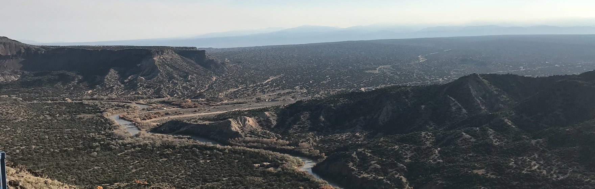

Hazard Zet Forward

Photograph of the Rio Grande as seen from White Rock, NM
This is the old site; to go to the new one, click here.
My name is Ron and I'm a Research Scientist at the University of North Carolina Greensboro. I have previously worked at the University of Colorado Boulder, Wayne State University, and the University of Michigan. I graduated with a Ph.D. in physics from Vanderbilt University in 2012.
My field of study is ultra-relativistic heavy ion physics. I am working on the hadronic calorimetry for sPHENIX as well collective flow signatures in small systems at RHIC in PHENIX. I maintain a strong interest in my previous research on flow and searches for strong CP-violation (which I did on the ALICE experiment while at Wayne State) in heavy ion collisions and I am a recognized expert in this area. My Ph.D. thesis is on identified charged hadron spectra in Au+Au and d+Au collisions at 200 GeV.
Biographical Sketch
- Research Scientist, University of North Carolina Greensboro, 2018-Present
- Research Associate, University of Colorado Boulder, 2015-2018
- Research Associate, Wayne State University, 2013-2015
- Visiting Scholar, University of Michigan, 2012-2015
- Ph.D. Physics, Vanderbilt University, 2012
- M.S. Physics, Vanderbilt University, 2009
- B.S. Physics, Seton Hall University, 2005
Selected Publications
- Pseudorapidity dependence of particle production and elliptic flow in asymmetric nuclear collisions of p+Al, p+Au, d+Au, and 3He+Au at sqrt(s_NN) = 200 GeV
- Creating small circular, elliptical, and triangular droplets of quark-gluon plasma
- Multi-particle azimuthal correlations for extracting event-by-event elliptic and triangular flow in Au+Au collisions at sqrt(s_NN) = 200 GeV
- Measurements of mass-dependent azimuthal anisotropy in central p+Au, d+Au, and 3He+Au collisions at sqrt(s_NN) = 200 GeV
- Measurements of azimuthal anisotropy and charged-particle multiplicity in d+Au collisions at sqrt(s_NN) = 200, 62.4, 39, and 19.6 GeV
- Measurements of multiparticle correlations in d+Au collisions at 200, 62.4, 39, and 19.6 GeV and p+Au collisions at 200 GeV and implications for collective behavior
- Design and Beam Test Results for the sPHENIX Electromagnetic and Hadronic Calorimeter Prototypes
- To CME or not to CME? Implications of p+Pb measurements of the Chiral Magnetic Effect in heavy ion collisions
- Exploring the Beam Energy Dependence of Flow-Like Signatures in Small System d+Au Collisions
- Charge-dependent anisotropic flow studies and the search for the Chiral Magnetic Wave in Pb+Pb collisions at sqrt(s_NN) = 2.76 TeV
- Measuring and interpreting charge dependent anisotropic flow
- Spectra and ratios of identified particles in Au+Au and d+Au collisions at sqrt(s_NN)=200 GeV
- Deviation from quark-number scaling of the anisotropy parameter v_2 of pions, kaons, and protons in Au+Au collisions at sqrt(s_NN) = 200 GeV
Contact
- The best way to reach me is by unofficial email: belmonrj at gmail dot com
- If you prefer, you can reach me by official email: rjbelmon at uncg dot edu
- You can also contact me on Skype: username ron dot belmont